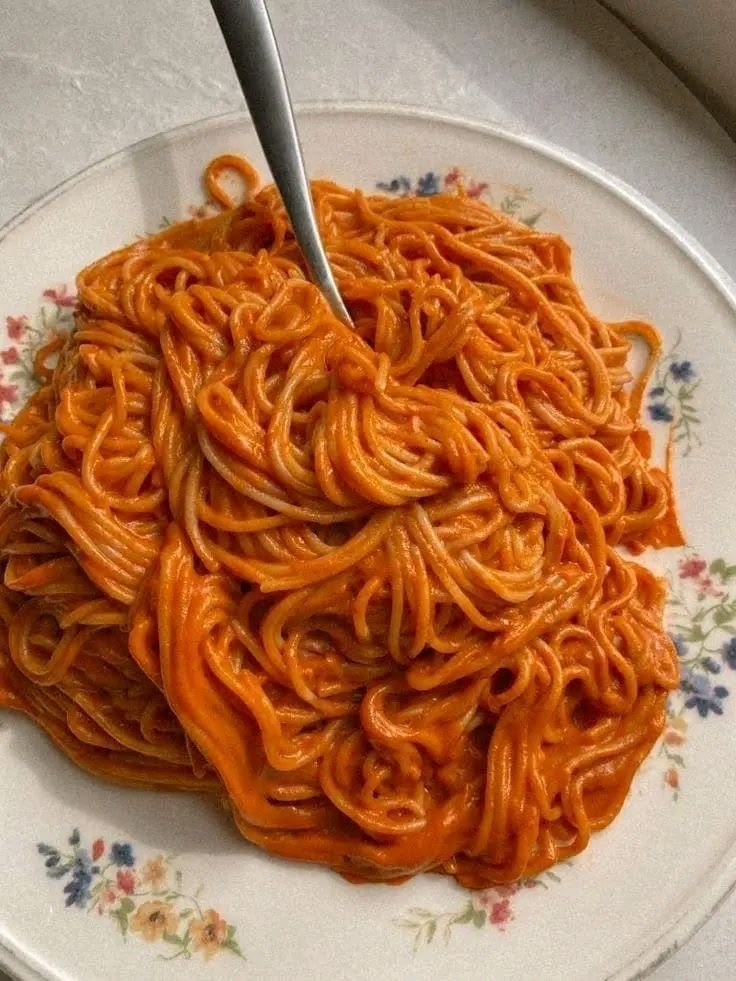

Spaghetti Bolognese

Preparation Information
- Preparation Time: 15 minutes
- Cooking Time: 30 minutes
- Total Time: 45 minutes
- Servings: 4 people
- Difficulty: Easy
Description
A hearty, flavorful Italian meat sauce served over al dente spaghetti noodles. Simple ingredients, amazing taste — perfect for any weeknight dinner.
Ingredients
- 400g ground beef
- 1 medium onion, diced
- 2 cloves garlic, minced
- 1 can (400g) crushed tomatoes
- 2 tbsp tomato paste
- 1 tsp dried oregano
- 1 tsp dried basil
- Salt and black pepper to taste
- 300g dried spaghetti
- Fresh basil and grated cheese for serving
Instructions
- Bring a large pot of salted water to a boil. Cook spaghetti according to package directions until al dente. Drain.
- While pasta cooks, heat a little oil in a large pan over medium heat. Add onion and cook for 5 minutes until soft.
- Add garlic and cook for another minute until fragrant.
- Add ground beef. Break it apart with a spoon and cook until browned all over.
- Stir in crushed tomatoes, tomato paste, oregano, basil, salt, and pepper. Bring to a gentle simmer.
- Let sauce simmer for 15–20 minutes, stirring occasionally, until thick and flavorful.
- Toss cooked spaghetti with the sauce, or serve sauce over individual plates of pasta.
- Top with fresh basil and grated cheese. Enjoy!
Enjoy Your Spaghetti Bolognese!
Your delicious homemade Spaghetti Bolognese is ready. Serve hot and enjoy with your favorite toppings!